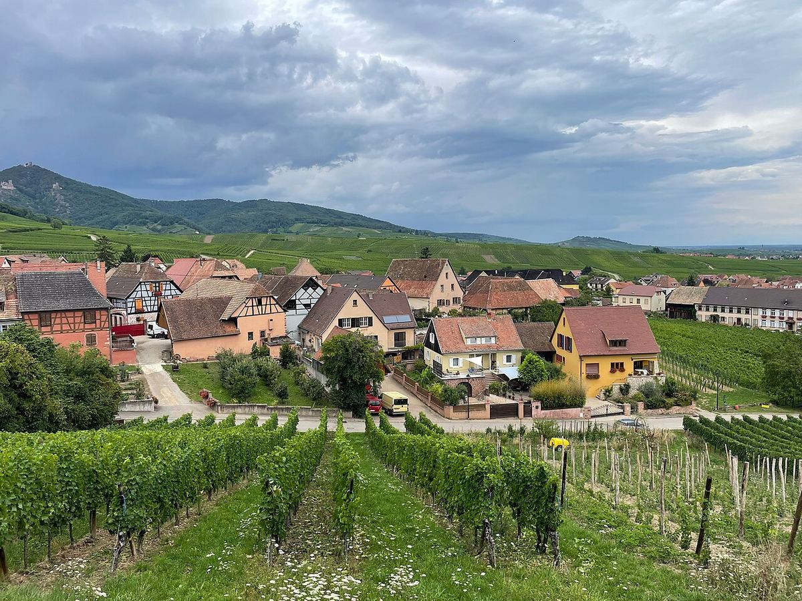
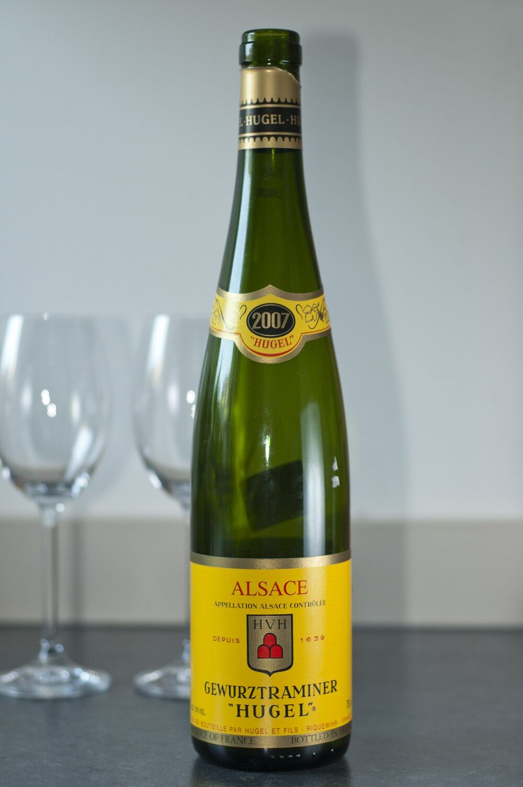

BLANCO
Alsacia, entre los Vosgos y el Rin, es una región de vinos blancos aromáticos que, a diferencia de la mayor parte de Francia, se identifican por la variedad. Riesling, Gewürztraminer, Pinot Gris y Muscat son sus uvas más prestigiosas.

La viticultura alsaciana se remonta a época romana y alcanzó gran prosperidad en la Edad Media, cuando sus vinos se exportaban por el Rin hacia el norte de Europa. La región sufrió después las devastaciones de la guerra de los Treinta Años. Su historia política ha estado marcada por los cambios de soberanía entre Francia y Alemania: anexionada al Imperio alemán de 1871 a 1918, periodo en el que buena parte de su producción se destinó a vinos corrientes, fue ocupada de nuevo durante la Segunda Guerra Mundial. Tras 1945 se impuso una política de calidad: la denominación Alsace se reconoció en 1962, la de Alsace Grand Cru en 1975 y la de Crémant d'Alsace en 1976. La Ruta de los Vinos de Alsacia, que recorre los pueblos vitícolas, se inauguró en 1953.
El viñedo ocupa las laderas orientales de los Vosgos, entre unos 200 y 400 metros de altitud, en los departamentos del Bajo Rin y el Alto Rin. Las montañas protegen la región de los vientos y las lluvias del oeste, de modo que el clima es semicontinental, soleado y relativamente seco; Colmar es una de las ciudades más secas de Francia. Los veranos cálidos y los otoños largos permiten una maduración lenta. La geología es muy variada como consecuencia de la formación de la fosa del Rin: en pocos kilómetros se suceden granitos, gneis, esquistos, areniscas, calizas, margas y suelos volcánicos, lo que explica la diversidad de los grands crus.
La AOC Alsace cubre la mayor parte de la producción y suele indicar la variedad en la etiqueta; el Edelzwicker es un ensamblaje de varias variedades. La AOC Alsace Grand Cru comprende 51 parcelas delimitadas, como Schlossberg, Rangen, Brand o Kaefferkopf, este último añadido en 2007. La AOC Crémant d'Alsace agrupa los espumosos de método tradicional, elaborados sobre todo con Pinot Blanc, Auxerrois, Riesling, Pinot Gris, Chardonnay y Pinot Noir. Las menciones Vendanges Tardives y Sélection de Grains Nobles designan vinos de vendimia tardía, los segundos elaborados con uvas a menudo afectadas por la podredumbre noble. Los vinos de Alsacia se embotellan obligatoriamente en la botella alta y esbelta llamada flûte.
Se consideran variedades nobles la Riesling, que da blancos secos de acidez firme y gran longevidad; la Gewürztraminer, muy aromática, con notas de lichi, rosa y especias; la Pinot Gris, de cuerpo amplio; y la Muscat, que en Alsacia suele elaborarse seca. Completan el panorama la Sylvaner, la Pinot Blanc y la Pinot Noir, única variedad tinta importante, con la que se elaboran tintos y rosados. El grado de dulzor de los blancos varía según el productor y la añada, desde vinos completamente secos hasta otros con azúcar residual perceptible.
